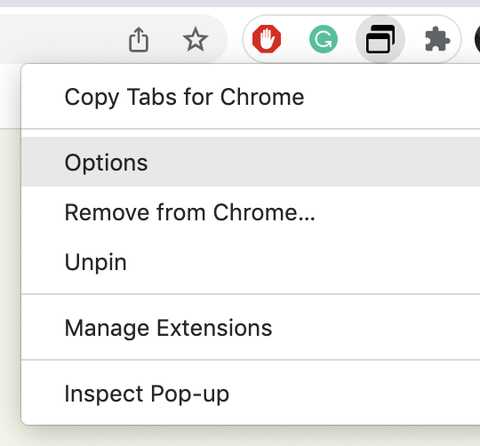

CopyTabs for Chrome | Welcome
CopyTabs for Chrome | Welcome
CopyTabs© designed to copy URLs & Titles from open tabs in their current window.
By default, CopyTabs will skip the first 3 tabs from the left, then copy the URLs & Titles from the rest of the tabs, closing each tab that has been copied.
Right click the CopyTabs icon > Options to change settings

Click the above "Copy Tabs" button and see the magic in action!
Remeber to paste what you've just copied ;)